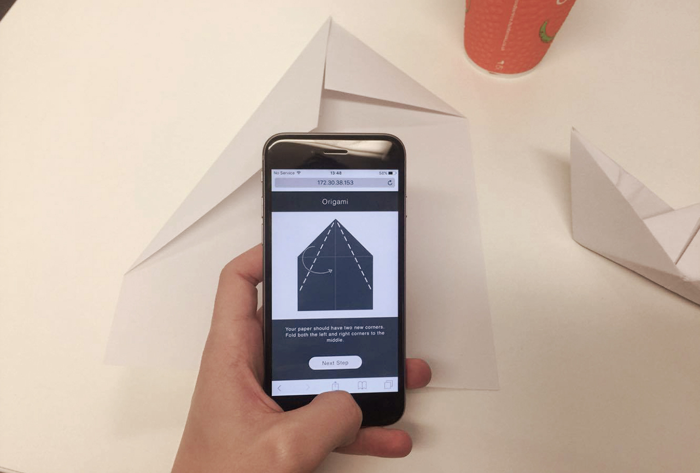
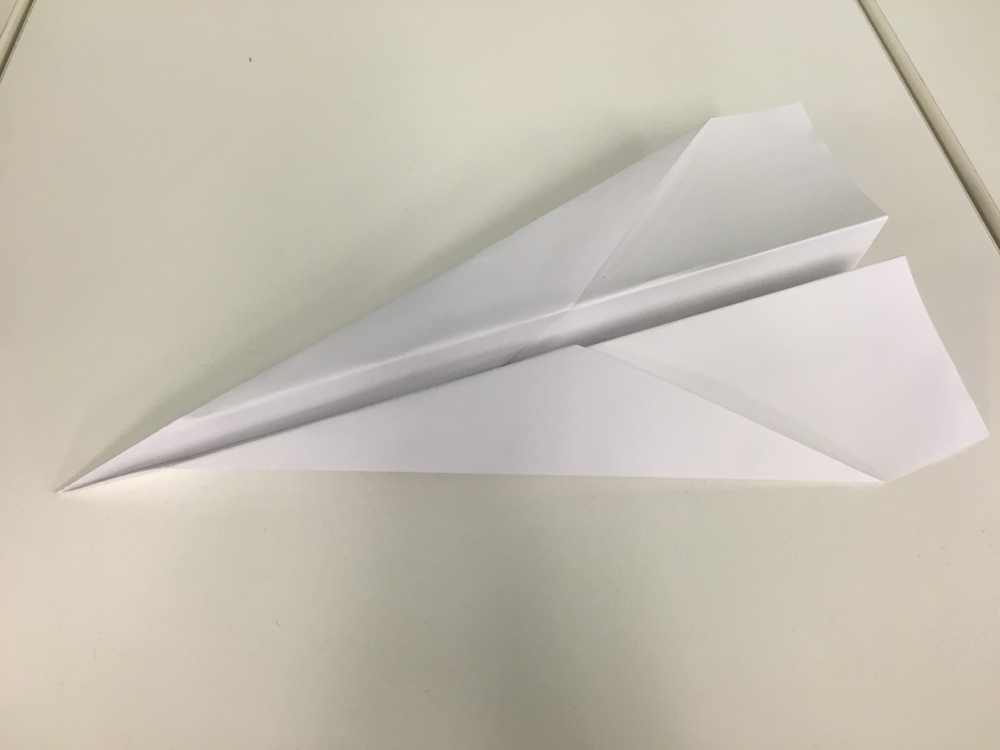
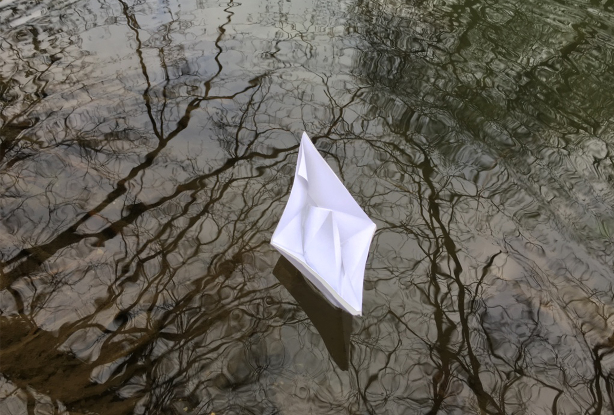

Origami
Web Application
The main project that i've been working on this semester is a web app called 'Origami'. The goal has been to design and develop an active web application primarily for use with smartphones. This has thouroughly tested my abilities as a visual designer in various areas such as user interface, user experience and illustration.
The purpose of this project has been to challenge my self in an area of design that most interests me which is apps. Rather than producing static concepts I set part of my goal to create something active. The digital design industry is continuously evolving and gave me inspiration to move out of my comfort zone by attempting something new.
Initial Idea
The initial idea came from my habbit of folding paper planes. One of the areas in visual design that most interests me is apps. With both of these thoughts in mind I came up with the idea to create a smartphone app that teaches users to create various styles of paper planes.
Research
Before pursuing the initial idea my first thoughts were has this been done before. After searching through the app store I discovered that there were a couple of similar apps that do the same thing. However, most of them were quite pricey for what they were and lacked a certain quality in design. For example, one of the apps I came across cost around $2.99 and featured a very basic interface with video instructions that could easily be found for free on the internet. After continueing the search there wasn't a single app that screamed success, especially as most haven't been updated for years. This gave me some reassurance that my idea could be worth pursueing and my ambitions at this point were to create a good quality app based on the paper plane idea.
At this stage the original idea seemed like a good path to take. However, I did feel that it could be developed or improved in some way to make it a little more exciting. This made me think that obviously paper planes aren't the only things that can be made with paper so I went to google and searched 'Origami'. Some of the first results were images of paper objects such as boats and animals. Next I began to take a quick look at some origami sites that included instructions for creating a ton of origami. This began to give me the impression that my app could be based around origami rather than just paper planes.
Development
...Now that the basic idea was set I decided to have some fun creating various origami. Whilst doing this it gave me the idea of sketching throughout crafting the origami for use as instructions in the app.
Outcome
